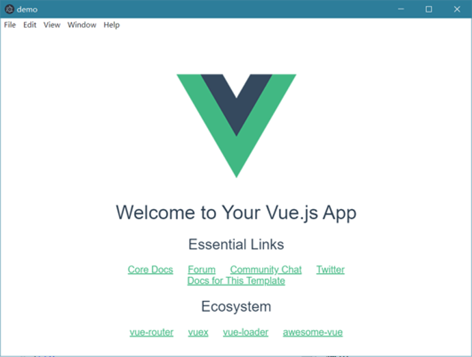
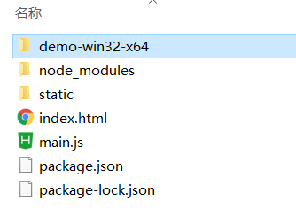

electron + Vue 初体验
针对Windows设备，使用electron有两种方法，一种是直接安装electron-quick-start，另一种是在Vue的脚手架中安装
electron和electron-packager来实现目的。这里使用的是后者，因人而异。
准备
Node和Vue的安装
可以参考这篇文章npm的安装教程
文章介绍的已经很详细了
初始化
npm init webpack electron-vue
cd electron-vue
配置
打开
config/index.js，设置build下的assetsPublicPath为./进入
dist目录新建
index.js文件，设置内容const {app, BrowserWindow} =require('electron');//引入electron let win; let windowConfig = { width:800, height:600 };//窗口配置程序运行窗口的大小 function createWindow(){ win = new BrowserWindow(windowConfig);//创建一个窗口 win.loadURL(`file://${__dirname}/index.html`);//在窗口内要展示的内容index.html 就是打包生成的index.html //win.webContents.openDevTools(); //开启调试工具，我把它注释了，就不开启 win.on('close',() => { //回收BrowserWindow对象 win = null; }); win.on('resize',() => { win.reload(); }) } app.on('ready',createWindow); app.on('window-all-closed',() => { app.quit(); }); app.on('activate',() => { if(win == null){ createWindow(); } });新建
package.json文件，设置内容{ "name": "demo", "productName": "demo", "author": "adyo", "version": "1.0.4", "main": "main.js", "description": "demo", "scripts": { //自定义指令，感兴趣的可以搜索一下指令 "pack": "electron-packager . --arch=x64 --overwrite" }, "build": { "electronVersion": "1.8.4", "win": { "requestedExecutionLevel": "highestAvailable", "target": [ { "target": "nsis", "arch": [ "x64" ] } ] }, "appId": "demo", "artifactName": "demo-${version}-${arch}.${ext}", "nsis": { "artifactName": "demo-${version}-${arch}.${ext}" } }, "dependencies": { // 手动添加的依赖 "electron": "^8.2.0", "electron-packager": "^12.2.0" } }在
dist目录下执行npm install electron、npm install electron-packager，注意，不添加其他参数，这样是在dist目录下产生了包文件，把dist目录当作打包工作目录，也是可以在Vue的根目录下配置的：看这里，这里面需要注意的是，这里面用到的main.js，可以使用我提供的main.js。
使用
执行
npm run build进入
dist目录，执行electron .，能看到桌面应用
在
dist目录，执行自己刚才定义的指令npm run pack，就会在本目录下生成一个打包文件，里面有可执行文件 ，至此就有能在桌面使用的js应用了。